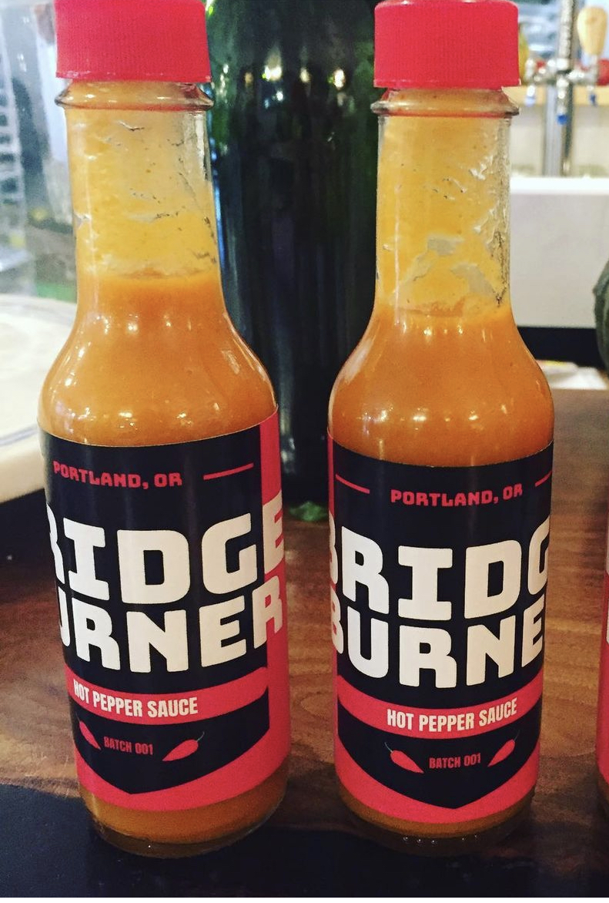
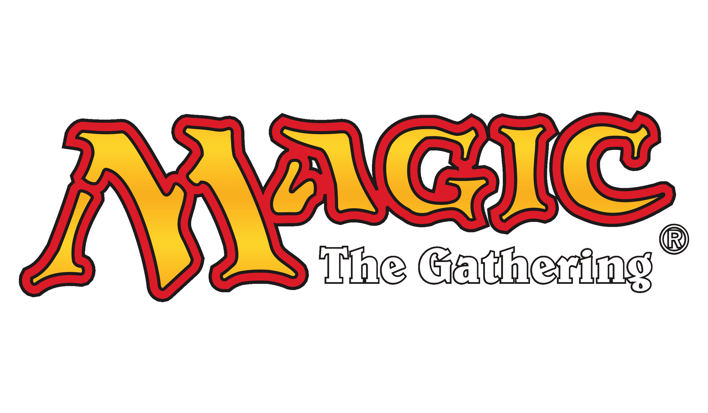

I grew up in Minneapolis, but these days I call Portland, Oregon home. My background is predominantly in the
service industry- I’ve spent the last decade working every job there is, from security to cooking to serving to
bartending to management. During that time I attended Portland State University and graduated in 2014 with a
bachelors degree in Sociology. More recently, I reached a point in my life where I realized I needed a career
change, and coding is something that has always intrigued me. I plan to bring all the interpersonal knowledge and
soft skills I’ve gained over the years working with customers and studying societal structures to the tech sector,
to explore the human side of the internet.
Music
I play guitar and sing in a band called Gumtooth, check out our most recent full length record below.
Hot Sauce
I have been making my own hot sauce for years and recently started a fledgling company called Bridge Burner Hot
Sauce. Right now bottles are only available in store at Paiku in St.
Johns, but I hope to expand in the future!

Magic the Gathering
If you're a fellow MTG nerd feel free to check out my EDH decks on Tappedout

Current Commanders
- Elminster
- Sakashima of a Thousand Faces & Jeska, Thrice Reborn
- Ishai, Ojutai Dragonspeaker & Kamahl, Heart of Krosa
- Rakdos, Lord of Riots
- Kess, Dissident Mage
- Araumi of the Dead Tide
- Lady Evangela
- Firesong and Sunspeaker